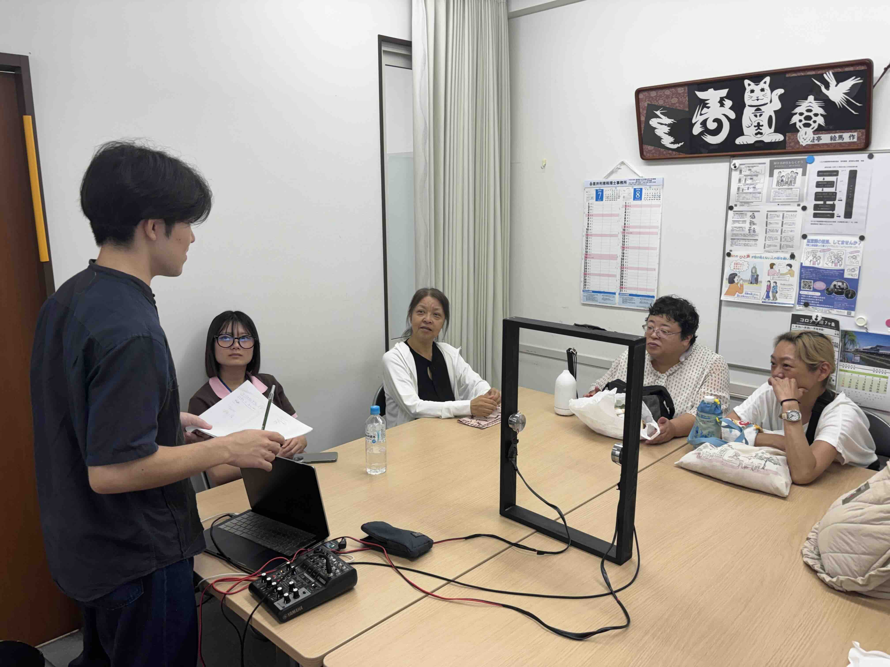
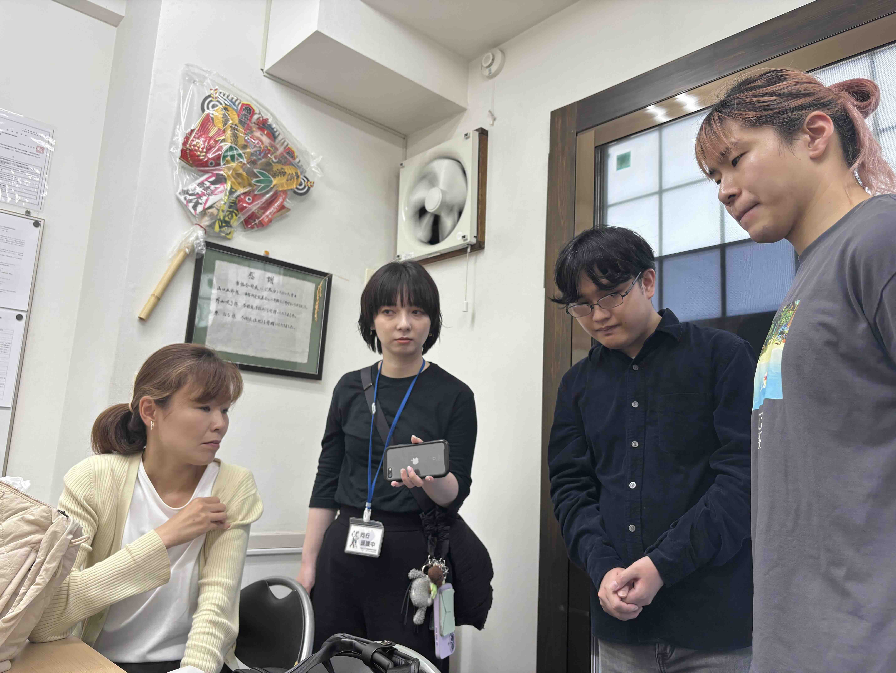
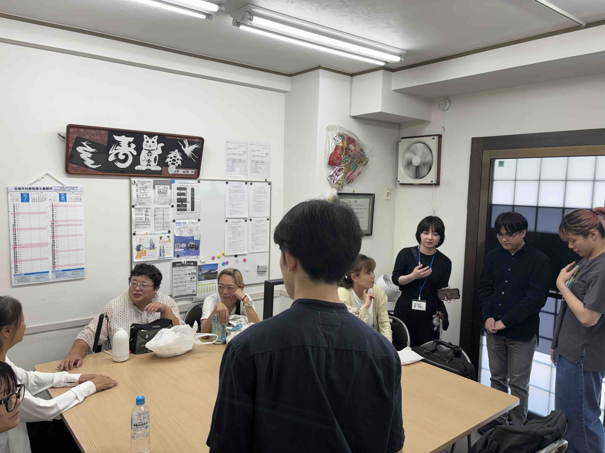
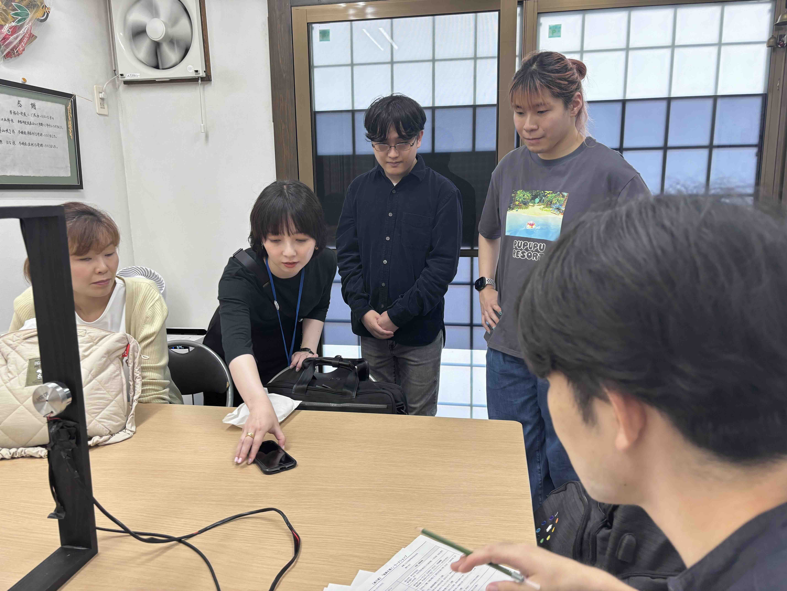

Work — 2026
東京都盲人福祉協会での鑑賞会

概要
About「絵画を聴く」は、全盲の友人と一緒に絵画を鑑賞した経験から始まった実践である。この装置が 実際に視覚障害のある人にとって意味のある体験になるのかを、当事者のもとで確かめる必要が あった。そこで東京都盲人福祉協会（八王子）に協力を依頼し、視覚障害当事者8名 （対面7名・オンライン1名）を対象にした鑑賞会を実施した。
木枠に手を通し、絵の構図に応じて変化する音と振動を体感してもらったうえで、感想を聞き取った。 参加者からは「空間性を感じられる」「絵の要素を音で感じられる」といった声が得られた。
参加者の声
Voices全盲の鑑賞者： 「空間性を感じられる」「絵の要素を音で感じられる」
晴眼の鑑賞者： 「絵画世界によりリアリティを感じる」
視覚の有無に関わらず同じ空間性や実在感を共有できたという声が双方から得られたことは、 「絵画を聴く」が目指してきた「体感する鑑賞」の手応えとなった。
使用した装置
「絵画を聴く」インスタレーション本体（木枠、振動スピーカー、距離センサー）をそのまま 東京都盲人福祉協会に持ち込んで実施した。
結果・展開
Findingsこの鑑賞会での気づきは、既存の言語ガイドと併用できる非言語型音声ガイドとしての展開を 検討するきっかけにもなっている。視覚や言語の程度に関わらず、誰もが同じ場で鑑賞体験を 分かち合える環境をつくるという「絵画を聴く」の出発点に立ち返る機会にもなった。
こうした結果は、2026年9月開催の第31回日本バーチャルリアリティ学会大会でも論文として 報告する。
写真
Photos

